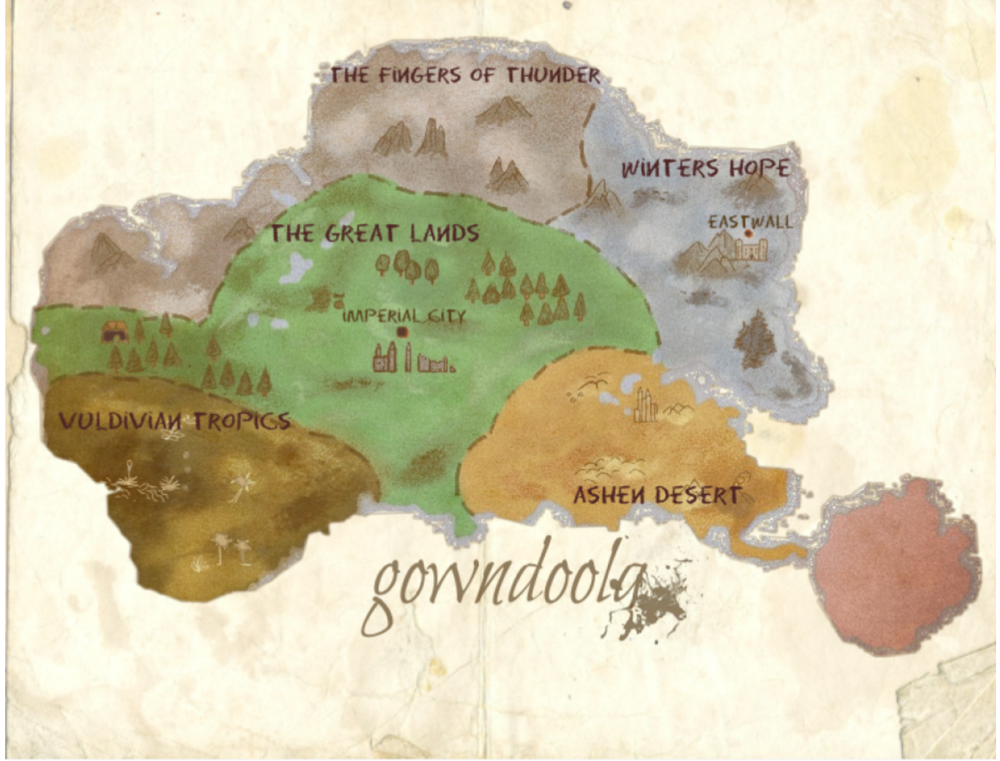

History

Long ago, when the First empires were being established, 12 powerful figures of the world made an agreement, an agreement to keep the world in balance no matter who, or what ruled over the populace. These twelve mighty warriors, mages, and diplomats went on to become the 12 guilds of Gowndoola, Each guild governing over different aspects of day to day life so that there will always be a system in place for people to turn to, even when governments fall and and entropy spreads.
Some Basic Geography
The 12 guilds are located on the large pangea-esc continent of Gowndoola, a continent larege enough to hold swamps, deserts, plains, and tundras. The only other major continentis Wronglin, a mysterious and dangerous place few dare go.
between the two continents are scattered islands.